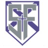

←︎ BACK TO SERVICE
←︎ BACK TO SERVICE

Knights for Safe Spaces
Overview
Mental health programming for the school community - built by someone who needed it first.
Knights for Safe Spaces runs mental health support programming for 2,000+ students at my school, with a specific focus on international students navigating the transition into a new country and school system.
I joined as a new student, saw the gap, and didn’t wait to be invited. I ran for Co-Executive and won. Now I’m building the resources I wish had existed when I arrived.
Impact
2,000+
Students reached
100+
International students in targeted programming
30
Volunteers led
What I Do
- Design and lead mental health programming events for the full student body
- Run targeted workshops and support sessions for international students
- Coordinate a team of 30 volunteers across events and initiatives
- Build resources that bridge the gap between arriving somewhere new and feeling at home
Reflection
The most useful thing about this role isn’t the leadership experience. It’s the reminder that showing up consistently, for people who need it, is its own kind of skill.
I didn’t start this knowing how to run mental health programming. I started it because I knew the gap was real - I’d lived it. That’s the only qualification that mattered at the start.